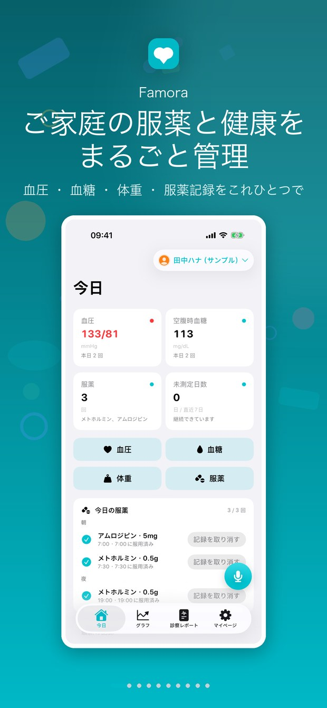
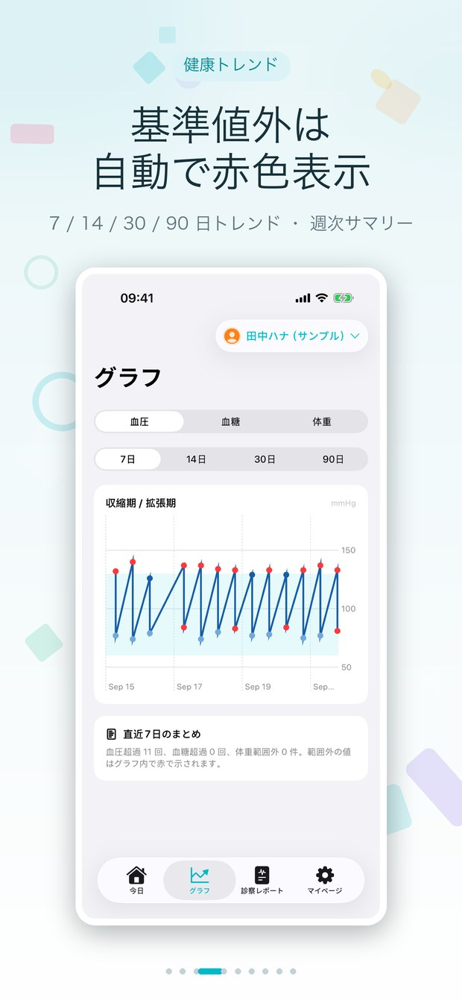
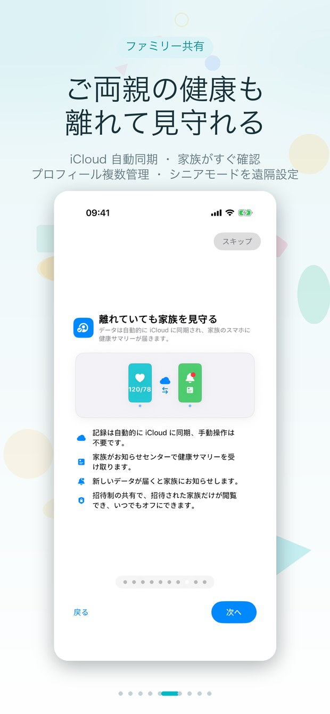
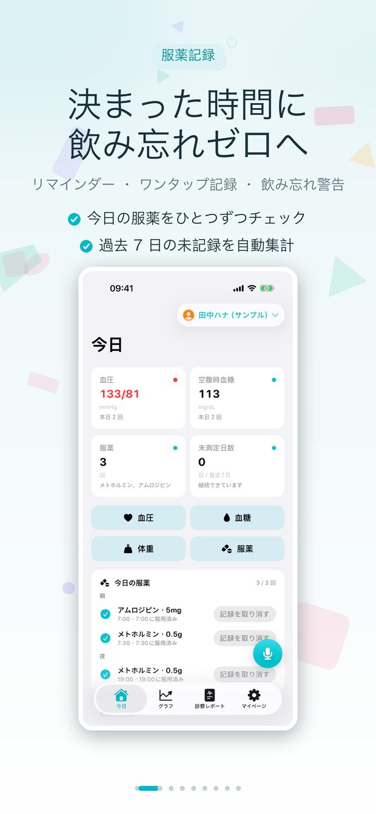
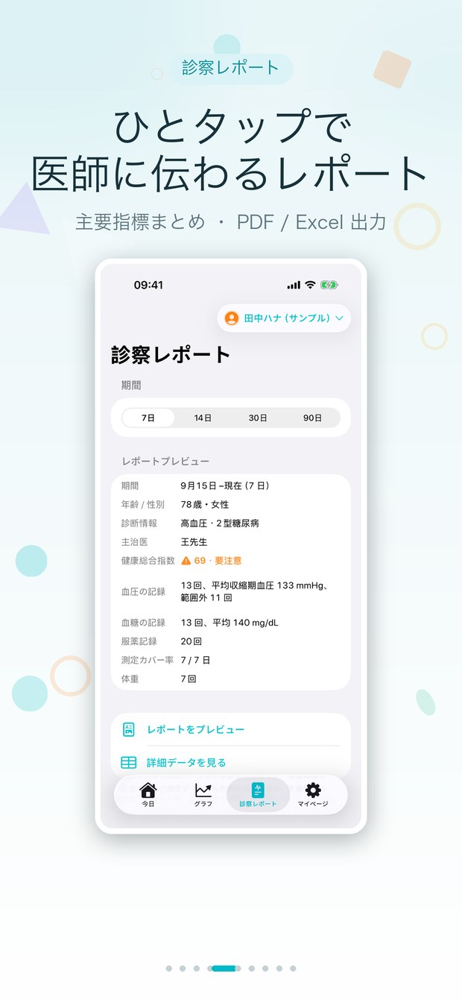
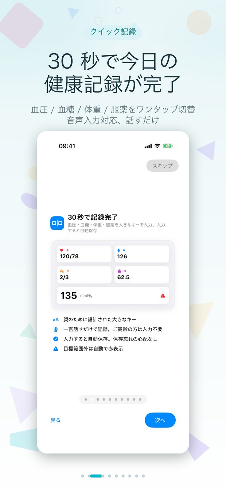

血圧 · 血糖 · 体重 · 服薬 —— お年寄りにも使いやすい健康手帳と、家族に見やすいデータビュー。



測定を記録し、服薬を逃さず、数秒で医師に渡せるレポートを作成。
今日の血圧・血糖・体重の数値と状態カラーを、ひと画面で確認できます。
14/30/90 日のトレンドをひと目で把握。変化を問題になる前に発見できます。

毎日の服薬スケジュールとチェックイン、遵守率もひと目でわかります。

14/30/90 日の PDF レポートをワンタップで生成。生データは Excel に書き出して、医師や家族と共有できます。

血圧・血糖・体重・服薬をワンタップで切り替え、30 秒で一日の記録が完了。音声入力にも対応。
測定値は自動で iCloud にアップロード。家族がアプリを開くと最新の数値がすぐ見られます。
ご両親にはシンプルな手帳を、家族には見やすい管理画面を。
手動同期は不要。新しい測定値が自動で家族に届き、全員が同じ情報を共有します。
家族は毎日のサマリーを受け取れます：今日の測定値、服薬チェックイン、気になる変化。
その日の測定がまだのときだけ、夜にやさしく一度お知らせ。測っていれば通知しません。
手首からすぐに記録。文字盤コンプリケーションで素早く確認できます。
家族一人ひとりに独立したプロフィール。データ・トレンド・レポートも分かれます。
アカウント不要、サーバーなし、広告なし。データはあなたの iCloud プライベートデータベースだけに保存されます。
データ・アカウント・購入についてよくいただくご質問です。